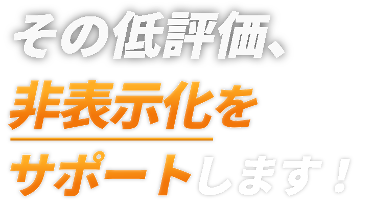
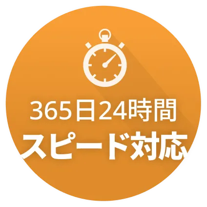

Case1
不動産仲介会社様
- ご依頼内容
- 嫌がらせのような書き込みを継続的に受けている。
来店・問い合わせ数が減少し、売上に影響が出ている。
自社で対応したがどうにもできず、
なんとかしてほしい。 - 処置
- ご相談時点での評価★2.1を深刻と判断。
ガイドライン違反の調査および是正措置を実施。 - 結果
- 口コミ改善成功業績の回復にも成功。

不当な口コミにお悩みの方、
専門チームが解決をサポートします。

あなたの企業の評価レベルをチェック！
PROBLEM
悪評を放置すると...
TARGET USERS
ネット上の口コミは会社の生命線と言っても過言ではありません。悪評を放置して成長する事は難しい時代に突入しました。
根拠のない低評価は、機会損失を招きます。 お客様が安心して来店できる状態を整えます。
従業員や役員に対する名指しでの心ない書き込みは、ブランディングの観点からもマイナスでしかありません。
法的な対応が難しいケースでも、別の解決策があります。
諦める必要はありません。
私たちは膨大なガイドラインを徹底的に精査し、専門チームが個別のケースごとに最適なアプローチを行うことで、口コミの健全化を目指します。
| 項目 | 自力で解決 | 弁護士（法的手段） | 当社（専門対策） |
|---|---|---|---|
| 費用 | 無料 | 高額 | 初期費用0円 |
| 成功率 | 非常にリスクが高い | ケースによる | 豊富な実績と 解析力 |
| スピード | 手間がかかる | 長期化（3ヶ月〜） | 最短即日着手 |
| 手間/リスク | 手間・精神的負担大 | 費用対効果が合わない | 丸投げOK 秘密厳守 |
私たちは、「コンテンツポリシー」を徹底的に精査し、その基準に準拠した正当な報告ロジックを構築しています。
膨大な運用実績に基づき、正規の手順に従って再審査を促すことで、ブランドイメージの健全化をサポートします。
※当社はIT技術による対策支援を提供しており、法的な交渉代行（非弁行為）は一切行いません。
法令およびプラットフォームの規約を遵守した、安全な手法のみを採用しています。
ADVANTAGES
万が一解決できなかった場合、費用は一切いただきません。
相談料・着手金は全て無料で行います。
投稿者や周囲に知られることなく、プラットフォームの規約に準拠した手法で解決します。
業界の最先端を走る専門家チームが
難易度の高いケースも親身に取り組みます。
CASE STUDIES
※ご依頼人様から許可をいただき、実際のお声を一部編集して掲載しております。
これらの事例は過去の解決実績であり、すべての案件で同様の結果を保証するものではありません。
FAQ
ご安心ください。
私たちはこれまで数多くの困難な事例を解決に導いてまいりました。
成功率を「100%」と断言することは控えさせていただきますが、独自の解析に基づいた申請ロジックにより、業界内でも極めて高い水準の成功率を維持しております。
解決の可否については、事前の無料診断にて「過去の類似ケース」と照らし合わせ、客観的な数値を提示させていただきます。まずは現状の被害状況を私たちにお聞かせください。
万が一解決に至らなかった場合、着手金を含む対策費用は一切いただかない「完全成果報酬制」を採用しております。
また、私たちの手法はプラットフォームのガイドラインを遵守した正当な手続きです。無理なスパム行為等は行いません。アカウントの停止等のリスクは極めて低いため、どうぞご安心ください。
大きな違いは「手法」と「コスト」にあります。
弁護士の場合は、主に裁判所を通じた仮処分申請など「法的手段」を用います。これは非常に強力ですが、解決までに数ヶ月の期間と、一般的に60万円〜といった高額な着手金・報酬が発生することが多いです。
また、法的手段を講じても100%認められるわけではなく、解決できなかった場合でも、「高額な着手金が戻ってこない」という金銭的リスクも伴います。
当センターでは、法的手続きを行わず、技術的な解析と規約に準拠した申請ロジックで解決を図ります。
そのため、法的コストを大幅にカットし、スピーディーかつ安価な対策が可能となっています。
万が一解決に至らなかった場合は費用をいただかない「完全成果報酬制」ですので、まずはリスクのない無料診断からお試しください。
安価な理由は「徹底した効率化」です。
私たちは前身組織からの豊富な経験により、どの書き込みに対しどのようなロジックが有効かというデータベースを構築しています。
無駄な調査時間を省き、最短ルートで申請を行う体制を整えているため、低価格でのサービス提供が実現しました。
また、「困っている事業者様を一人でも多く救いたい」という一般社団法人としての理念に基づき、適正価格での運用を徹底しております。
私たちの「実績に対する自信」の表れであるとご理解ください。
成果が出なければ1円もいただかないという仕組みは、対策側にとってはリスクを伴いますが、それだけ高い精度で解決できるという自負がございます。
ご依頼主様の金銭的リスクを最小限に抑え、共に解決を目指すパートナーでありたいと考えております。
通常対応に加え、最優先でリソースを投入する「特急プラン」もご用意しております。
インターネット上の悪評は、放置すると数時間で拡散される恐れがあります。当センターでは、正式なご依頼後、最短即日で解析・対策に着手いたしますが、一刻を争う深刻な事案向けに、専門チームが最優先で動くオプションも選択いただけます。
状況に応じて最適なスピード感をご提案しますので、まずは今すぐご相談ください。
はい、可能です。
お忙しい方でもスムーズに進められる体制を整えております。
ご相談から契約、対策の報告まで、すべてお問い合わせフォーム・LINE・オンライン会議にて完結可能です。わざわざご来社いただくお手間は取らせません。
目安は数日から数週間ですが、特急対応の場合はさらに期間を短縮できるケースもございます。
解決までの期間はサイトの性質により変動しますが、私たちは「現場の経験」から、どのサイトにどのロジックが最短で効くかを熟知しています。
お急ぎの事情に合わせて柔軟にスケジュールを組みますので、ご理解いただけますと幸いです。
24時間365日、いつでもご相談いただけます。
ネット被害に休みはありません。そのため当センターでは、深夜や休日でも専門スタッフが状況を確認できる体制を敷いております。
特にお急ぎの場合や、お仕事の合間にしか時間が取れないという方は、公式LINEからメッセージをお送りください。
チャット形式で迅速にヒアリングをさせていただきますので、まずは安心してお問い合わせください。
もちろんです。
諦める前に一度、私たちが培ってきた「現場の経験」をご活用ください。
他社様で断られた案件でも、視点を変えて異なる申請ロジックを組み立てることで、解決に至った事例が多数ございます。
私たちは技術と知見を駆使し、最後まで可能性を模索いたします。
お急ぎのこととお察しいたします。最短即日での着手が可能です。
インターネット上の悪評は、時間が経つほど拡散される恐れがあります。当センターでは24時間体制でのお問い合わせを受け付けており、正式なご依頼から通常1〜2営業日以内、特にお急ぎの場合は即日に解析を開始いたします。
フォームまたは公式LINEから状況をお送りいただければ、即座に専門スタッフが確認いたします。
悪い口コミは放置するほど、評価が固定化します。
一日も早い対策が、被害を最小限に食い止める鍵です。
あなたの企業の評価レベルをチェック！